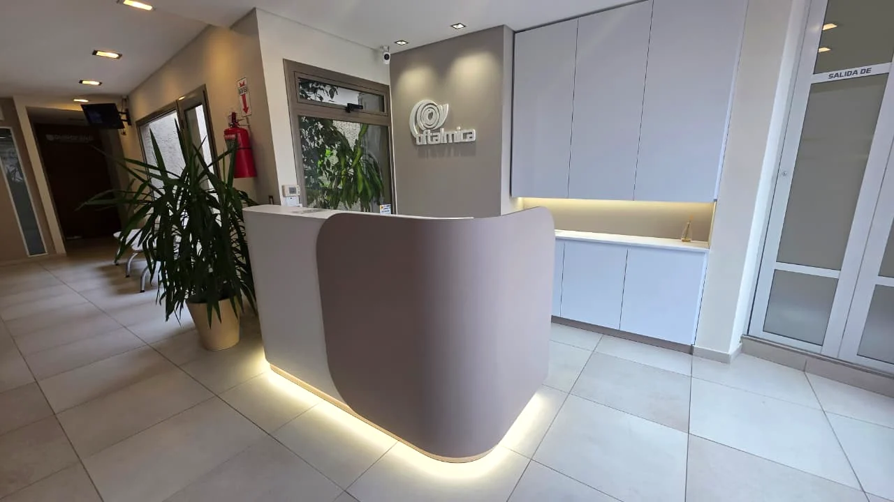
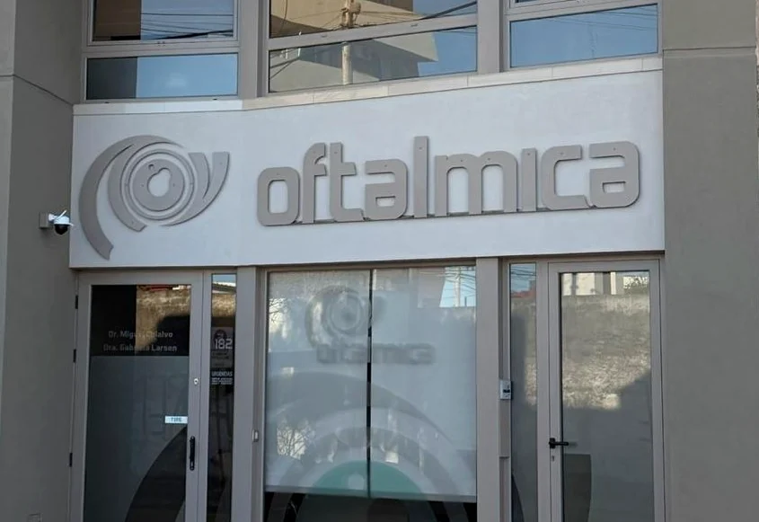
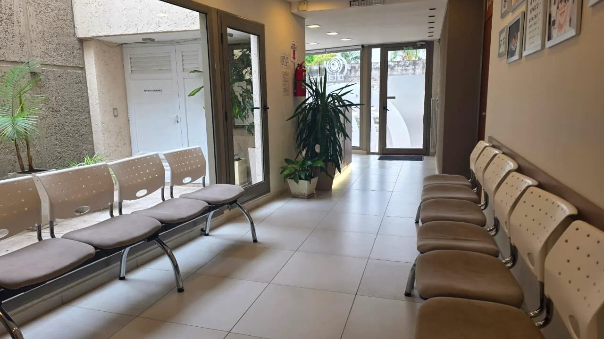

WhatsApp directo
3537 666224
Escribinos por WhatsAppAtención oftalmológica cercana, estudios especializados, prácticas quirúrgicas y urgencias oftalmológicas las 24 horas. Un espacio dedicado al cuidado de tu visión en Bell Ville.
3537 666224
Escribinos por WhatsApp3537 603891
Llamar ahoraBell Ville, Córdoba
Lunes a viernes · 08:00 a 12:00 · 16:00 a 20:00


Un espacio pensado para que cuidar tu visión se sienta más cercano.
En Oftálmica reunimos atención personalizada, estudios de diagnóstico y prácticas oftalmológicas. Nos importa que cada paciente encuentre claridad, confianza y un trato humano.
Nos encontrás en Belgrano 182, Bell Ville, Córdoba, para acompañarte en el cuidado de tu visión.
Conocé a nuestros profesionalesDesde una consulta de rutina hasta estudios más específicos. Conocé las prácticas que realizamos en nuestro centro.
TOCÁ CADA ESTUDIO PARA SABER MÁSEvaluación general de la salud de tus ojos, de acuerdo con las necesidades de cada paciente.
Medición instrumental que ayuda a evaluar la graduación de los ojos.
Estudio que mide el espesor de la córnea.
Evaluación de estructuras oculares mediante ultrasonido.
Registro fotográfico del fondo del ojo para su evaluación.
Obtiene imágenes detalladas de distintas estructuras del ojo, como la retina.
Permite medir dimensiones oculares relevantes para distintas evaluaciones.
Estudio por ultrasonido de alta resolución del segmento anterior del ojo.
Genera un mapa de la curvatura y características de la superficie corneal.
Evalúa la sensibilidad de la visión en diferentes puntos del campo visual.

La tranquilidad también forma parte del cuidado.
Profesionales dedicados a la atención oftalmológica, con un trato cercano en cada consulta.
MP 24025/1 ME 8777
MP 24718/4 ME 10291
Estas son algunas de las prácticas quirúrgicas que forman parte de nuestra atención oftalmológica.
Hacé tu consultaSolicitá un turno o hacenos tu consulta por WhatsApp. Estamos para orientarte.
Bell Ville, Córdoba · CP 2550
Cómo llegar08:00 a 12:00 h
16:00 a 20:00 h
Teléfono fijo: 3537 417600
Atención de urgencias las 24 horas. Llamá al 3537 603891.
Para turnos y consultas generales, escribinos al WhatsApp del consultorio.